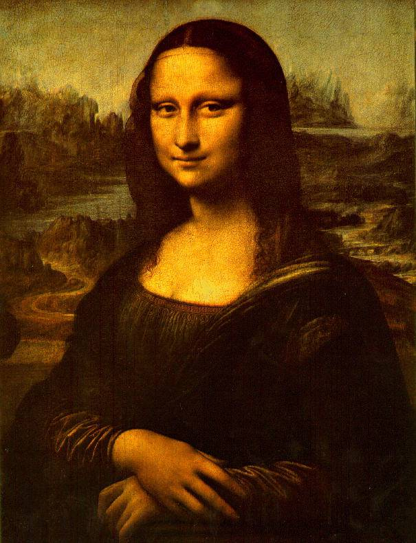
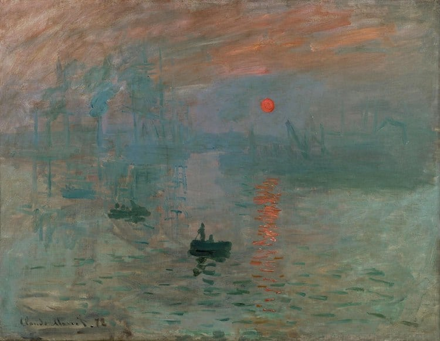

Consulte aquí el valor del dolar
Detalle obra

Autor: Leonardo da Vinci
Nombre: La Mona Lisa
Técnica: Óleo / Técnica del sfumato
Descripción: Retrato de medio cuerpo, o de tres cuartos, sobre un paisaje que se divide en dos atmósferas, una más fría (la superior) y otra más cálida con colores terrosos (la inferior).
Historia: La Gioconda se hizo popular para el público en general por la amplia difusión de su robo, en 1911. La prensa cubrió el hecho: se preguntaba quién podría haber robado la Gioconda, por qué y, sobre todo, ¡cómo! El cuadro se recuperó; el culpable era un italiano muy chauvinista llamado Vincenzo Peruggia. Su acto se basó en su deseo de restituir la obra a su país natal
Precio: 2.393,00 USD
Detalle obra

Autor: Pierre-Auguste Renoir
Nombre: Baile en el Moulin de la Galette
Técnica: Óleo / Aceite
Descripción: Esta pintura más pequeña (76cm por 1.11cm) presenta pinceladas sueltas que permiten a los espectadores identificar más fácilmente los diferentes tonos que componen el negro. Aunque no está claro cuál pieza es el original y cuál es la copia, las pinturas son idénticas en cuanto a su iconografía, desde la puesta de sol hasta las personas individuales.
Historia: En 1861, Monet fue enviado a Algeria para hacer su servicio militar. Durante sus siete años en el norte de África, el artista desarrolló un gusto particular por la luz y el color. Al regresar a Francia, siguió incorporando colores brillantes a sus pinturas, que aplicaba con pinceladas rápidas y expresivas sobre el lienzo para capturar “impresiones” de sus alrededores. Rechazando completamente los gustos tradicionales de la prestigiosa Academia de Bellas Artes de París, la aproximación de Monet a la pintura transformó el arte del siglo XIX, siendo Impresión, sol naciente un punto de inflexión.
Precio: 2.151,00 USD
Detalle obra

Autor: Claude Monet
Nombre: Impresión, sol naciente
Técnica: Óleo
Descripción: Impresión, sol naciente es un cuadro del pintor francés Claude Monet, que dio su nombre al movimiento impresionista. Se conserva en el Museo Marmottan Monet de París. Pintado aproximadamente en el año 1872, representa el puerto de Le Havre, ciudad en la que Monet pasó parte de la vida.
Historia: En 1861, Monet fue enviado a Algeria para hacer su servicio militar. Durante sus siete años en el norte de África, el artista desarrolló un gusto particular por la luz y el color. Al regresar a Francia, siguió incorporando colores brillantes a sus pinturas, que aplicaba con pinceladas rápidas y expresivas sobre el lienzo para capturar “impresiones” de sus alrededores. Rechazando completamente los gustos tradicionales de la prestigiosa Academia de Bellas Artes de París, la aproximación de Monet a la pintura transformó el arte del siglo XIX, siendo Impresión, sol naciente un punto de inflexión.
Precio: 2.016,00 USD
Detalle obra
Autor: Johannes Vermeer
Nombre: La joven de la perla
Técnica: Pintura al aceite
Descripción:La joven de la perla, también conocida como Muchacha con turbante, es una de las obras maestras del pintor neerlandés Johannes Vermeer realizada entre 1665 y 1667, y, como el nombre indica, utiliza un pendiente de perla como punto focal. La pintura se encuentra actualmente en el museo Mauritshuis de La Haya.
Historia:Esta obra es, sin duda, el cuadro más famoso de Jan Vermeer, pintor del siglo XVII. Es un óleo sobre lienzo, que actualmente se encuentra en La Haya. En esta ciudad es dónde se mostró en público por primera vez. Fue en 1881, en una subasta en la que se compró por sólo dos florines y treinta céntimos. El comprador murió sin herederos, con lo que donó este cuadro (y otros muchos) al museo Mauritshuis. De la joven, se desconoce su identidad real, se cree que podría ser una modelo o quizás se hizo por encargo. Lo que está claro es que su postura enigmática ha dado lugar a muchas teorías. Tras la mayor y más reciente restauración del cuadro en 1994, la sutil combinación del color y la íntima mirada fija de la chica hacia el espectador se han realzado mucho. Tal realce se debe a un contraste entre un fondo muy oscuro y lo que se puede ver del cuerpo vestido de la muchacha; es decir, hay un tenebrismo que en este caso resulta casi caravaggiano, aunque sin las actitudes dramáticas del estilo, y se mantiene la típica y cristalina tranquilidad que caracteriza a la mayor parte de las obras de Vermeer de Delft.
Precio: 1.998,59 USD
Detalle obra

Autor: Vincent van Gogh
Nombre: La noche estrellada
Técnica: Óleo / Pintura al aceite
Descripción: Destaca el tratamiento de la luz de las estrellas como puntas de luz envueltas en un halo luminoso a su alrededor, obtenido con una de las pinceladas más personales de la historia de la pintura: un trazo a base de espirales que dominan el cielo y los cipreses de primer plano, tomando como inspiración a Seurat y la estampa japonesa. Al fondo se aprecia la silueta de un pueblo con la larga aguja de la torre de la iglesia presidiendo el conjunto.
Historia: Van Gogh pintó La noche estrellada sobre el Ródano en 1888—solo un año antes de que completara La noche estrellada. Durante esta época, el artista vivía en Arlés, una idílica comuna francesa. Aunque fue pintada con pinceladas vibrantes y colores expresivos, la escena es tranquila; “dos coloridos amantes en primer plano” son las únicas personas presentes en la pintura, y el cielo lleno de estrellas evoca un sentimiento de serenidad. Van Gogh pintó este paisaje en varias ocasiones. Sin embargo, La noche estrellada es el único estudio nocturno de esta vista. Por lo tanto, además de las descripciones en las docenas de cartas que le escribió a su hermano, Theo, el cuadro ofrece una rara visión nocturna de lo que el artista vio mientras estaba en aislamiento. “A través de la ventana con barrotes de hierro, puedo vislumbrar un cuadro de trigo cercado”, escribió en mayo de 1889, “sobre el cual en la mañana veo salir el sol en toda su gloria”.
Precio: 2.319,00 USD
Detalle obra

Autor: Edvard Munch
Nombre: El Grito
Técnica: Técnica mixta de óleo y pastel sobre cartón
Descripción:El grito es una obra del pintor noruego Edvard Munch, cuyo título original es Skrik (Scream en inglés). Debido a su fuerza expresiva, esta pintura es considerada un antecedente del movimiento expresionista. El grito es el cuadro más famoso de Munch, quien realizó diferentes versiones del mismo a lo largo de los años.
Historia: El cuadro La desesperación (1892), previo a El grito, retrata precisamente ese momento. En él, aparece en primer plano un hombre con sombrero de copa de medio lado, en actitud contemplativa, en un escenario similar. Sin embargo, Munch siguió experimentando, y pintó un nuevo cuadro, con el mismo título, en el que representa a un hombre que muestra el rostro en una actitud más desesperada, en medio de una escena más sombría. No satisfecho con los cuadros anteriores, Munch siguió pintando, en busca de la que sería su obra maestra. Probó entonces con una figura andrógina, que está de frente y se lleva las manos a la cabeza con una expresión de profunda angustia, que parece emitir (¿u oír?) un grito.
Precio: 1,917,00 USD